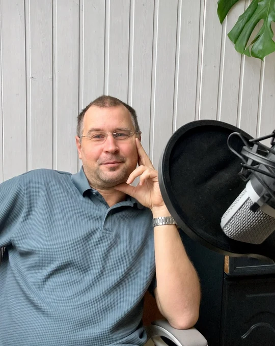
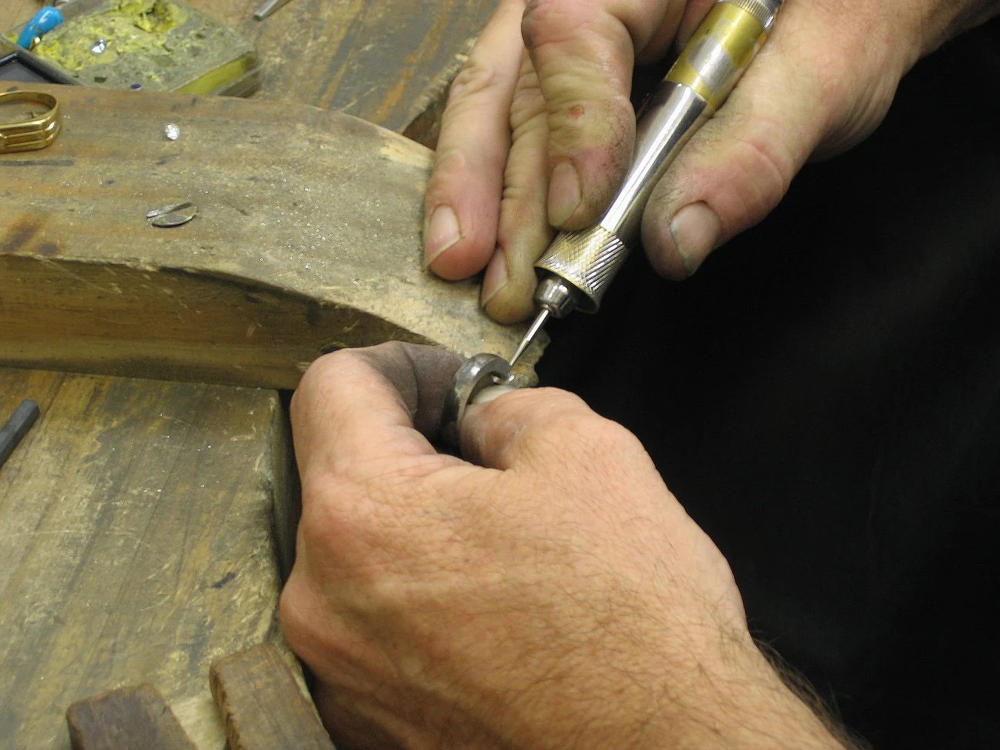
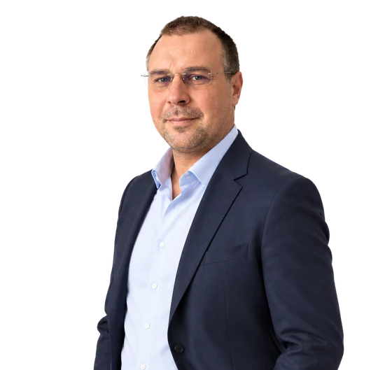

Videopodcast mit Dietmar Vogelmann
Goldgezwitscher.
Was ist ein Ring wert, den man niemals verkaufen würde? Gespräche über Gold, Handwerk und die Menschen hinter den Schmuckstücken.
Geplanter Start am
Der Goldgezwitscher-Titelsong


Vogelmann
Die Gespräche
Was macht ein Stück wertvoll?

Für die einen ist es ein Beruf. Für die anderen ein Stück Familiengeschichte. Im Podcast kommen beide zu Wort.
An der Werkbank
Woran erkennt eine Goldschmiedin, ob sich ein Ring noch reparieren lässt? Es geht um Fassungen, Werkzeug und die Entscheidungen, die man dem fertigen Schmuck kaum ansieht.
Gold und Edelsteine
Feingehalt, Schliff und Fassung erzählen unterschiedliche Dinge über ein Stück. Dietmar möchte von Händlern und Fachleuten wissen, worauf sie beim zweiten Blick achten.
Erbstücke und Erinnerungen
Was bleibt von einem Menschen in seinem Schmuck? Hier ist Platz für persönliche Geschichten über das Erben, Weitergeben und Behalten.

Dein Gastgeber
Dietmar Vogelmann.
Dietmar kauft Edelmetalle an und handelt mit Schmuck. Dabei begegnen ihm Menschen, die ihm erzählen, warum sie ein Stück hergeben oder weshalb sie es für immer behalten. Aus solchen Fragen ist Goldgezwitscher entstanden.
Seine Arbeit kennst du vielleicht schon von Nachlassgold oder Feingold-Vogel.
Dietmar kennenlernenGast bei Goldgezwitscher
Was würdest du erzählen?
Du arbeitest mit Gold, kennst einen Stein bis ins Detail oder trägst ein Schmuckstück mit Geschichte. Dietmar freut sich auf dein Thema.
Für Unternehmen
Partner des Podcasts werden
Eine Folge begleiten, eine Staffel unterstützen oder eine eigene Idee vorschlagen.